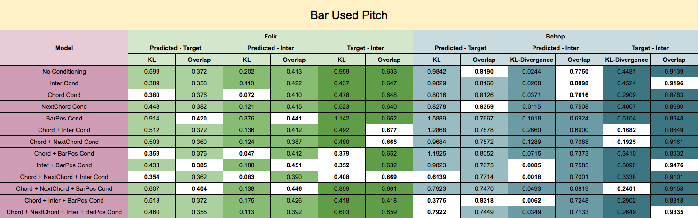
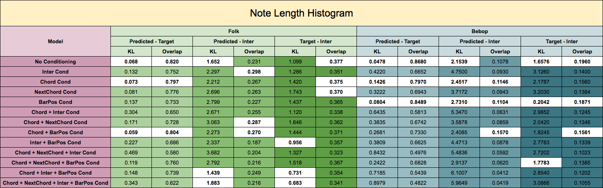
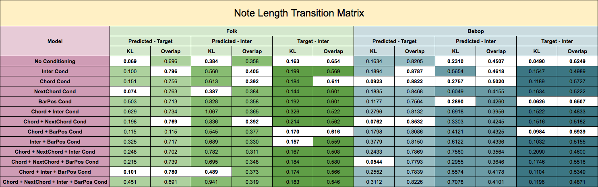
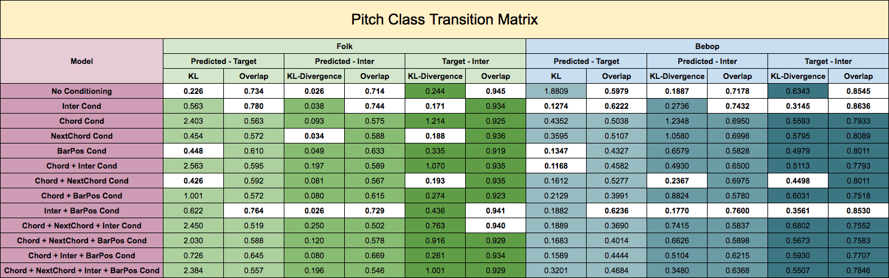
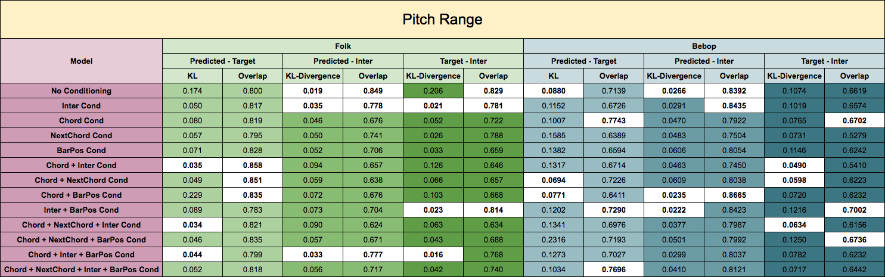
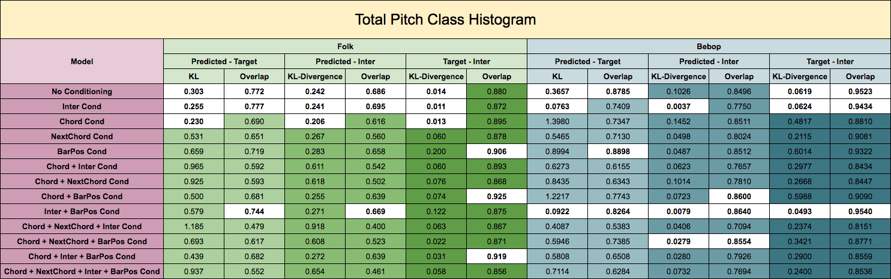
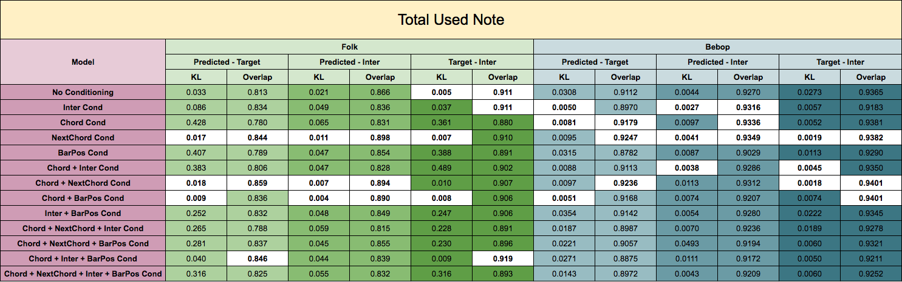
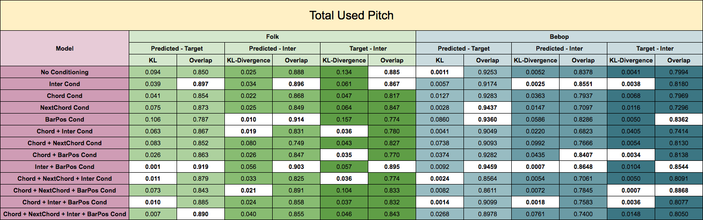

The Validation NLL training curves for a subset of model configurations,
adding increasing numbers of conditioning information.
The final validation NLL values acheived by each model
configuration for each component network on each dataset.
The MGEval (Music Generation Evaluation)
toolbox was designed for objective evaluation of music generation systems. It uses several
music specific, pitch and duration-based
features to measure the degree to which generated music is able to match the statistics of
the data it was trained on. For each feature calculated for each generated sample and real sample
from the training data, a probability distribution is computed over the intra set euclidean
distances between samples within the generated set and training set, as well as an inter-set
distribution between samples in each set. The performance of a
generative model is evaluated by computing the distance between these probability distributions
across the training data and generated melodies using KL-divergence and Overlap. This toolbox is used to compare the performance of each
conditioning configuration and to further analyze the impact of each condition (I, C, N, and B).
We first generate new melodies using our conditioning configurations for each nontransposed song in both datasets.
Melodies are generated by feeding an initial seed of 10 notes to the trained models and then recurrently
sampling pitch/duration values from the output Softmax distributions. For models requiring chords,
we use the chord progressions from the lead sheets. A set of 12 features, sub-categorized into
pitch and duration types, is computed for both the generated melodies and the original melodies in
the datasets. The KL-Divergence (lower is better) and Overlap (higher is better) between the
predicted distribution and inter-set distribution is used as the performance metric.
Below, we have provided the raw KL-Divergence and Overlap values calculated between the training
(target) and generated (predicted) intra-set distributions and training / generated inter-set
distribution for each feature, for each dataset, and for each configuration. In each 'KL' column,
the lowest three values are bolded and highlighted, while in each 'Overlap' column, the highest
three values are bolded and highlighted.
Average Inter-Onset Interval -
the average distance between note beginnings, a scalar value.
Average Pitch Shift -
the average value of the interval between two consecutive
pitches, a scalar value.
The number of unique duration values used per a bar, a vector of N x 1 where N is the number of bars in the sample.
The number of unique pitch values used per a bar, a vector of N x 1 where N is the number of bars in the sample.
A count of duration values used in a sample, a vector of 24 where each element is the number of appearances of 24 discrete duration values.
The two-dimensional note-length class transition matrix is a histogram-like representation computed by counting the note-length transitions for each (ordered) pair of notes. The resulting feature dimensionality is 24 × 24.
The two-dimensional pitch class transition matrix is a histogram-like representation computed by counting the pitch transitions for each (ordered) pair of notes. The resulting feature dimensionality is 12 × 12.
The pitch range is calculated by subtraction of the highest and lowest used pitch in semitones. The output is a scalar for each sample.
A histogram of the number of octave-independent pitch classes used in a sample, a vector of size 12
The total number of used notes, a scalar.
The total number of unique pitches (octave-dependent) used, a scalar.